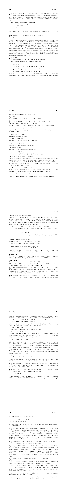
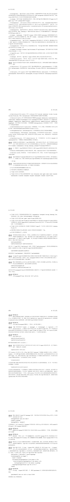

TEX基础
# TEX命令行的使用
首先，第一步当然是打开TEX命令行，如果安装了TEX：
$ tex
然后会显示：
This is TeX, Version 3.14159265 (TeX Live 2019/W32TeX) (preloaded format=tex)
**
2
**表示这里要输入一个tex文件，如果在**后你键入的第一个字符不是反斜线，那么 TEX 将自动插入\input 你的输入读入tex文件（注意，不能加后缀名“.tex”，因为TEX要搜索tex文件的时候，会在输入的后面加“.tex”查找“[输入值].tex”文件）。
如果不想编译文件，那就输入\relex：
This is TeX, Version 3.14159265 (TeX Live 2019/W32TeX) (preloaded format=tex)
**\relax
*
2
3
4
下面*就只剩一个了，这里就可以输入文本和各种控制词了。当检测到输入了\end时，tex程序会输出：
[1]
Output written on texput.dvi (1 page, 212 bytes).
2
表示排好版的文件放到texput.dvi里面了，并退出了程序。
# 直接编译一个文件
如果要编译一个叫做“story.tex”的文件：
$ tex story
依然注意，不能加后缀名“.tex”。
# TEX各种控制词
# 变量
\font\cs=<external font name> %把 \cs 变成字体标识符
\chardef\cs=<number> %把 \cs 变成字符代码
\countdef\cs=<number> %把 \cs 变成 \count 寄存器
\def\cs...{...} %把 \cs 变成宏
\let\cs=<token> %把token当前的含义赋予给 \cs。
2
3
4
5
# 定义变量：
\let\变量名=值
注意，TEX变量名不能有数字
# 显示变量：
\show\变量名
例如：
\let\countA=100
\let\countB=\countA
\show\countB
2
3
会输出：
> \countB=the character 1.
<*> \show\countB
2
这表明\countB是一个字符；又例如：
\let\countA=\it
\let\countB=\countA
\show\countB
2
3
输出：
> \countB=macro:
->\fam \itfam \tenit .
<*> \show\countB
2
3
表明\countB是个宏。
# TEX宏
TEX的一些高级控制词和自定义控制词有时又被称作宏，其定义的一般形式为：
\def<control sequence><parameter text>{replacement text}
其中
<parameter text>不包含大括号, 并且在<replacement text>中所出现的{和}要正确嵌套。还有，符号#有特殊含义: 在<parameter text>中, 第一个出现的#后面必须跟1, 下一个要跟2，依此类推；只允许九个#。在<replacement text>中, 每个#后面必须跟一个<parameter text>中的#后面出现过的数字, 或者 一个#后面跟一个#。表示当宏展开时，后一种情况表示一个单个#；前一种情况表示插入相应的变量。TEX，包括Plain TEX中所有的宏（约900个）都是由TEX基本控制词（约300个）定义得到，而所有的基本控制词都能转化为屏幕上的输出。
——《The TeXBook》P.161
例如：
\def\ib{\it\bf}
\def\ital#1{{\it #1\/}}
\def\itbf#1#2{\it #1\rm\bf #2 \rm}
2
3
调用时：
\ib italicized text
\ital italicized text
\itbf italicized bold text
2
3
经过宏替换将变为：
\it\bf italicized text
{\it i\/}talicized text
\it i\rm\bf t \rm alicized bold text
2
3
或使用编组：
\ib italicized text
\ital{italicized text}
\itbf{italicized text}{bold text}
2
3
经过宏替换将变为：
\it\bf italicized text
{\it italicized text\/}
\it italicized text\rm\bf bold text \rm
2
3
# 另一种定义方法
TEX 还允许定义这样的宏, 其参数用相当普遍的方法来分界; 你不需要总是把变量封装在大括号 中。例如：
\def\cs #1. #2\par{...}
定义了一个控制系列
\cs, 它有两个参数, 并且这两个参数如下确定出:#1由\cs和下一个随后出现的“句点+空格”之间的所有内容组成;#2由这个“句点+空格”和其后出现的\par之间的所有内容组成。例如：
\cs You owe \$5.00. Pay it.\par
第一个变量是
You owe \$5.00, 而第二个是Pay it.。
——《The TeXBook》P.160
（合理联想：正则匹配取得参数）
# 编组
TEX的编组就是把多个文本编组为一个单一对象。例如：
\canterline\TeX 123456
会以“TEX”为基准居中，而123456到了下一行。如果要让“TEX123456”整体居中，则需要让“TEX123456”编组成为一个单一对象：
\canterline{\TeX 123456}
此外，在编组中的\def也只会在当前编组中发挥作用。如果要让某个编组中的定义在全局发挥作用，则需要\global。例如一个在编组中的全局宏定义：
{\global\def\ib{\it\bf}}
# LaTeX中的\begin{}和\end{}是怎么实现的？
关键在于《The TeXBook》习题5.6中讲的用基本控制词\begingroup和\endgroup定义组。答案在习题5.7：
\def\begin#1{\begingroup\def\blockname{#1}}
\def\end#1{\def\test{#1}%
\ifx\test\blockname\endgroup
\else\errmessage{Some error occurred in \blockname}\fi}
2
3
4
这里的\ifx、\else、\fi是什么？看下面👇
# TeX选择结构
TeX选择结构  
# TeX循环结构

# TEX支持的源代码字符
ABCDEFGHIJKLMNOPQRSTUVWXYZ
abcdefghijklmnopqrstuvwxyz
0123456789 " # $ % & @ * + - = , . : ; ? !
( ) < > [ ] { } ‘ ’ \ | / _ ^ ~
2
3
4
5
6
7
# Plain TEX占用的特殊字符
&
#
%
$
2
3
4
# Plain TEX保留的特殊字符
\
{}
^
_
~
2
3
4
5
你可以重新定义一个Plain TEX保留字符的定义，例如在CJK和CCT中就有一个对~符号的重新定义（这个符号在Plain TEX中表示“输出一个空格但不能在此断行”）：
\global\def~{\hskip 0.25em plus 0.125em minus 0.08em \ignorespaces}
# 控制词和空格
TEX把多个空格和单个换行看作单个空格。
控制词后的空格都会被忽略，因为每个控制词后都需要一个空格以与正文分开（或者一个反斜杠接上其他控制词）。
如果要在控制词后放入空格，就需要一个反斜杠加空格。例如：
\TeX 123456
输出：TEX123456。如果要输出TEX 123456，则需要一个反斜杠加空格：
\TeX\ 123456
但是这样如果空格后面是个符号又会出现其他问题，终极解决方案是编组再加空格：
{\TeX} 123456
或者用空编组加空格：
\TeX{} 123456
如果不希望一个换行变成空格，可以加入%，它使得输入文件的行有效地终止而不引入 换行时 TEX 通常要插入的空格。还有, TEX 将忽略掉 % 后的任何内容, 直到文件的那行的结尾, 这样就可以在文稿中加入注释, 这些注释只是为了阅读方便。
例如：
123
456
789
2
3
输出：123 456 789，而：
123%
456%可有可无的注释甲
789%可有可无的注释乙
2
3
输出：123456789。
# Plain TEX中改变部分字体：
to be \bf bold \rm or to be ......
其中\bf表示加粗，\rm表示清除字体。同样的效果还可以用编组实现：
to be {\bf bold} or to be ......
它们都会输出：
to be bold or to be ......
类似\bf的控制词还有很多。
# Plain TEX斜体校正/
\/加在斜体字符末尾一般字符开头处，会增大斜体字符和一般字符间的间距，弥补因斜体带来的字符间距缩减。
to be {\it italicized\/} or to be ......
to be \it italicized\/\rm or to be ......
2
# Plain TEX粗体校正/
加粗字符也会有字符间距缩减问题，解决办法同上。
to be {\bf bold\/} or to be ......
to be \bf bold\/\rm or to be ......
2
# 自定义字体
\font\myfont=<字体名> at <大小>，例如10pt的CMR5字体
\font\myfont=cmr5 at 10pt
或者\font\myfont=<字体名> scaled <大小>，例如放大1.2倍的CMR5字体：
\font\myfont=cmr5 scaled 1200
# TEX的四种横线：
- 连字符-：
- - 短破折号—：
-- - 破折号——：
--- - 减号-：
$-$
# TODO:TeX对齐/制表符&
《The TeXBook》22章